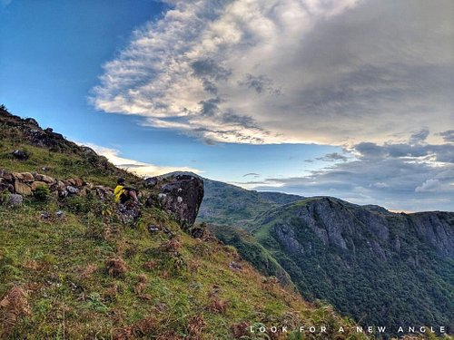

Idukki dam

Meesapulimala

Kalvari Mount

Idukki, is one of the 14 districts in the Indian state of Kerala. Idukki district lies amid the Cardamom Hills of Western Ghats in Kerala. Idukki district contains two municipal towns - Kattappana and Thodupuzha. The district currently includes five taluks in it.
Around 66% of Kerala's power needs come from various Hydroelectric Power Projects in Idukki district.Numerous cash crops and spices are cultivated throughout the district, making it The Spice Garden of Kerala. A significant area in the district is protected as reserved forests and wildlife sanctuaries. The Periyar River is a major river that originates and flows through Idukki. The Pamba River is another important river that originates from Idukki district.